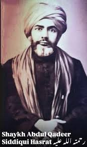
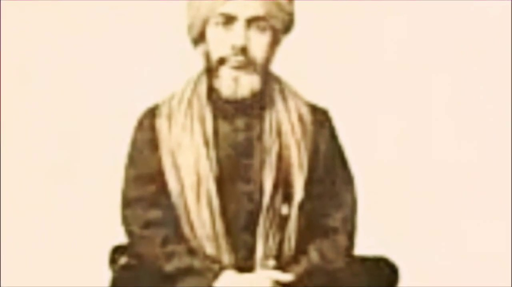
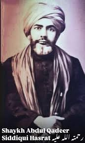
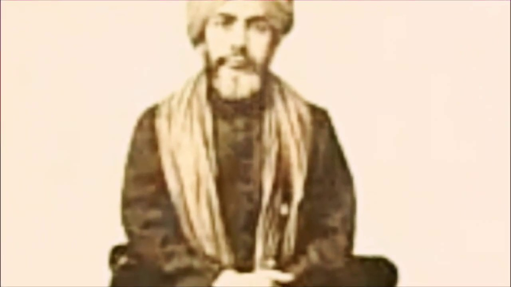
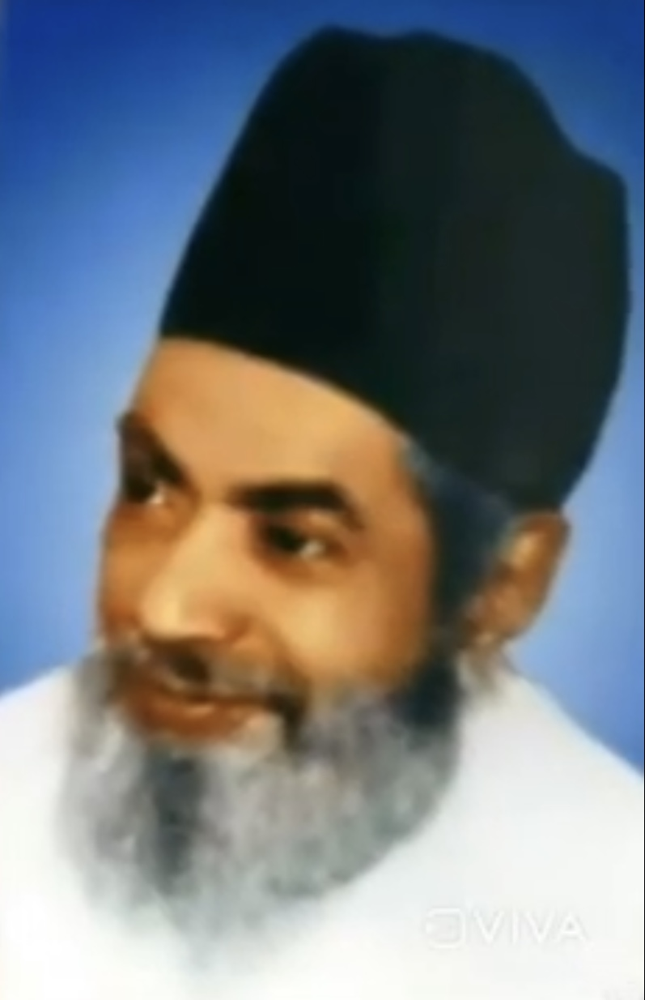
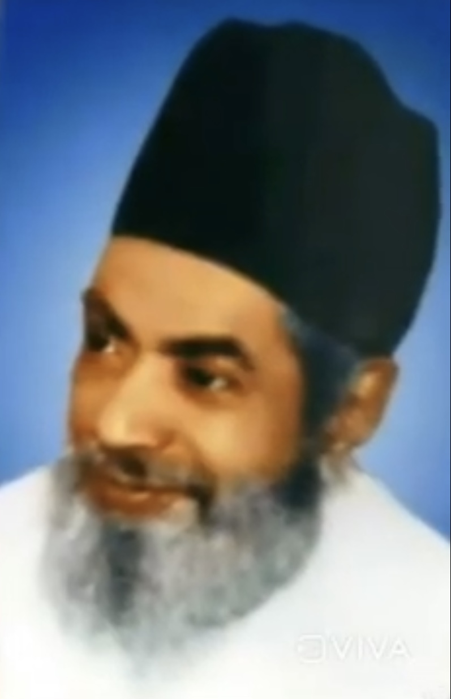

Maulvi Muhammed Abdul Qadeer Siddiqui (Hasrat) (1870–1962)
Maulvi Muhammed Abdul Qadeer Siddiqui (Arabic: محمد عبدالقدير صديقى ), widely known by his pen name Hasrat, was an Islamic theologian, Qur’anic exegete, poet, and Sufi of Southern India. Born in Hyderabad in 1870, he was a descendant of the first Caliph Abu Bakr (RA).
Due to the absence of formal schools at the time, he acquired education through individual teachers and later passed private examinations, earning distinctions such as Maulvi Fazil, Munshi, Munshi Alim, and Munshi Fazil. At just fifteen years of age, he began serving as a Mufti and teacher of Fiqh (Islamic Jurisprudence).
He later became the first Dean of the Faculty of Theology at Osmania University, Hyderabad, under the patronage of the Nizam VII, Osman Ali Khan. His tenure was so highly valued that it was extended annually even after retirement age for a decade.
Revered as Bahr Ul Uloom (Ocean of Knowledge), Siddiqui was a master of Qur’anic commentary, Islamic law, theology, and philosophy. He was a prolific poet, writing in Arabic, Persian, and Urdu, adopting the pen name Hasrat. Beloved among his disciples as Qadeer Piya, he devoted his life to scholarship, teaching, and spiritual guidance. He preferred the humble title Maulvi Abdul Qadeer Siddiqui, avoiding other titles his family held.
He passed away in 1962 and was laid to rest in Siddiq Gulshan, Hyderabad. A grand dome is being constructed over his grave, expected to be among the tallest in the region. His ‘Urs (death anniversary) is commemorated annually on the 16th, 17th, and 18th of Shawwal, drawing devotees and admirers.
A detailed biography titled “ABDULLAH – a Servant of Allah” (600 pages) was later compiled by his grandson, Maulvi Muhammad Anwaruddin Siddique.
His first spiritual master was his maternal uncle, Syed Khaja Muhammad Siddiq Hussaini, famously known as Mahboob Allah, who nurtured generations of Sufi saints. Siddiqui often said: “My father is Siddiqi (a reference to Abu Bakr as-Siddiq) and my Shaikh is Siddiq. I am a Siddiqi from every angle.”
He travelled widely, gaining knowledge from scholars across the Muslim world, and became a source of inspiration for thousands of students and disciples. Among his renowned students were Shaik al-Islam Sayyid Muhammad Badshah Husaini, Dr. Muhammad Hamidullah, Dr. Abdul Hafiz Qatil, Professor Ilyas Burney, and many others.
During his lifetime, he appointed 92 Khulafa’ (spiritual successors) in the Qadri-Qadeeri Silsila. Their influence spread across India and beyond, reaching the USA and Canada. His spiritual leadership continues through his descendants, with Hafez Abdul Razakh Siddiqui serving as the present Ja-i Nashin since 2011.
Gallery
 



 



.jpeg)

.jpeg)
.jpeg)
.jpeg)
.jpeg)
.jpeg)